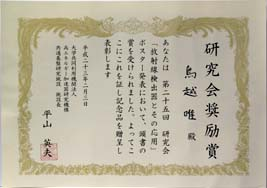
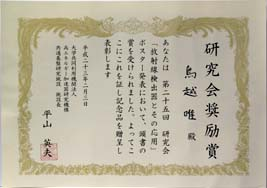
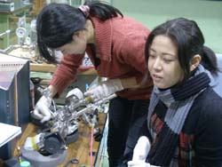
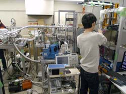

Update : 4 Apr. 2011
Update : 4 Apr. 2011中村研ニュース（2010年度）
修士生４名と学部生４人が修了・卒業［2011年3月］
3月23日（水）に，中村研の修士生４名と学部生４人が修了・卒業し，学位が授与されました。なお，修了式・卒業式は行なわれませんでした。修了・卒業したメンバーは次の通りで，４年生は皆，引き続き進学などで中村研に残ります。- 修士修了
- 片倉 勇人，片田 夕貴，河野 秀紀，鳥越 唯
- 学部卒業
- 大山 修平，西村 和真，藤田 崇徳，村山 慧
今春の日本物理学会年次大会と応用物理学関係連合講演会が中止［2011年3月］
3月末に予定されていた日本物理学会年次大会（藤井と村山（育）が発表予定）と応用物理学関係連合講演会（中村が発表予定）は，いずれも東日本大震災の影響で中止になりました。【速報】「東北地方太平洋沖地震」の影響について［2011年3月］
3月11日（金）に発生した「東北地方太平洋沖地震」の影響ですが，同日19:00現在，余震が断続的に続いているものの，大学内の中村研の関係する部屋は大きな被害は無い模様です。一方，KEKの実験室については状況はまだ不明です。
OBの宮本健司氏が来訪［2011年3月］
3月1日（火）に中村研OBの宮本健司氏（現・ニコン）が会社説明会のために来訪しました。後輩へのお土産に，知る人ぞ知る「ニコン羊羹」（右写真）も戴きました。
小型科学衛星シンポジウムに中村と村山慧が参加［2011年3月］
3月1日（火）に宇宙航空研究開発機構で第1回小型科学衛星シンポジウムが開かれ，中村と村山慧が参加しました。また，LiteBIRDグループの共同研究者が共同研究のポスター発表をしました。発表のタイトルは，「LiteBIRD: シミュレーションによる感度の研究－GPU利用による可能性－」でした。学部４年の５人の学部生が卒論発表会で発表［2011年2月］
2月22日（火）に工学部知能物理工学科の卒論発表会が開かれ，中村研の５人の学部４年生が発表を行ないました。発表のタイトルは次の通りです。
◎大山 修平：「液体キセノンの特性評価実験に向けたプリアンプの製作」◎高橋 俊輔：「X線CCD素子駆動用ヘッド基板の製作」
◎西村 和真：「X線CCD実験におけるクイックルックソフトウェアの開発」
◎藤田 崇徳：「実用化に向けた硬X線用微細ピンホールコリメータの研究」
◎村山 慧：「宇宙背景放射の観測シミュレーションへのGPUの応用」
M２の４人の院生が修論発表会で発表［2011年2月］
2月15日（火）と16日（水）に工学府物理情報工学専攻物理工学コースの修論発表会が開かれ，中村研の博士課程前期２年の４人の院生が発表を行ないました。発表のタイトルは次の通りです。
◎片倉 勇人：「X線用PチャネルCCDの駆動システムの構築」◎片田 夕貴：「キセノンの赤外シンチレーションの研究」
◎河野 秀紀：「ASTRO-H衛星搭載X線用CCD駆動システムのブレッドボードモデルの開発」
◎鳥越 唯：「電荷積分型ADCを用いた発光スペクトルの測定方法の研究」
【祝】M2の鳥越が「放射線検出器とその応用」研究会で講演し研究会奨励賞を受賞！［2011年2月］

 2月1日（火）〜3日（木）に第25回「放射線検出器とその応用」研究会（高エネルギー加速器研究機構放射線科学センターと応用物理学会・放射線分科会との共催）が高エネルギー加速器研究機構（つくば）で開催され，2日（水）と3日（木）にそれぞれ，博士課程前期２年の鳥越がShort Oralとポスターの発表を行ないました。発表のタイトルは「液体キセノンの発光スペクトルの測定」で，本研究室が各方面から支援を受けて研究を進めている液体キセノンの発光スペクトルの測定実験の最新結果と今後の予定について報告しました。
なお，発表後に鳥越はめでたく研究会奨励賞を受賞し，表彰状と記念品が贈呈されました！ 受賞理由は，これまで40年以上にわたって信じられてきた液体キセノンの発光波長値に対して取り組み新たな値を得るという成果を収めたことと，Short Oralの受け答えとポスター発表共に優れていたこととのことです。
本研究会は，放射線検出器の基礎的物理化学的過程から検出器開発，放射線計測技術に至るまでの広範なテーマについて各分野の全国の研究者が集まって議論する集まりで，四半世紀の長い歴史があります。このような由緒正しい公的な場で当研究室の研究が認められたということは大変喜ばしく，非常に力づけられる次第です。これまでに多大な貢献をしてくれたＯＢ，ＯＧの皆さんにも深く感謝申し上げます。なお，報告した研究成果は今後，XMASSなど世界各地で進行中の宇宙暗黒物質探索実験や，スイスでのμ粒子希崩壊探索実験MEG，さらに国内外で開発中の医療用PETなど，液体キセノンを用いる様々な分野で貴重なデータとして用いられると期待されています。
2月1日（火）〜3日（木）に第25回「放射線検出器とその応用」研究会（高エネルギー加速器研究機構放射線科学センターと応用物理学会・放射線分科会との共催）が高エネルギー加速器研究機構（つくば）で開催され，2日（水）と3日（木）にそれぞれ，博士課程前期２年の鳥越がShort Oralとポスターの発表を行ないました。発表のタイトルは「液体キセノンの発光スペクトルの測定」で，本研究室が各方面から支援を受けて研究を進めている液体キセノンの発光スペクトルの測定実験の最新結果と今後の予定について報告しました。
なお，発表後に鳥越はめでたく研究会奨励賞を受賞し，表彰状と記念品が贈呈されました！ 受賞理由は，これまで40年以上にわたって信じられてきた液体キセノンの発光波長値に対して取り組み新たな値を得るという成果を収めたことと，Short Oralの受け答えとポスター発表共に優れていたこととのことです。
本研究会は，放射線検出器の基礎的物理化学的過程から検出器開発，放射線計測技術に至るまでの広範なテーマについて各分野の全国の研究者が集まって議論する集まりで，四半世紀の長い歴史があります。このような由緒正しい公的な場で当研究室の研究が認められたということは大変喜ばしく，非常に力づけられる次第です。これまでに多大な貢献をしてくれたＯＢ，ＯＧの皆さんにも深く感謝申し上げます。なお，報告した研究成果は今後，XMASSなど世界各地で進行中の宇宙暗黒物質探索実験や，スイスでのμ粒子希崩壊探索実験MEG，さらに国内外で開発中の医療用PETなど，液体キセノンを用いる様々な分野で貴重なデータとして用いられると期待されています。OBの尾崎雄一氏が来訪［2011年1月］
1月31日（月）に，中村研OBの尾崎雄一氏（写真：中央，現・コニカミノルタオプト）が会社説明会のために来訪しました。OBの亀井拓也氏が来訪［2011年1月］
1月28日（金）の夕方に，中村研OBの亀井拓也氏（写真：右から３人目，現・TDK-EPC）が会社の説明のために来訪しました。次年度の新卒研生として５人が仮配属［2011年1月］
1月24日（月），中村研の平成23年度の新卒研生として5人が仮配属されました。M2の片田が日本放射光学会年会・放射光科学合同シンポジウムで登壇［2011年1月］
1月7日（金）から10日（月）まで，第24回日本放射光学会年会・放射光科学合同シンポジウムがつくば国際会議場で開催され，9日に中村研の博士課程前期２年の片田夕貴が登壇しました。 講演のタイトルは「硬X線用の微細ピンホールコリメータの開発」で，本研究室が高エネルギー加速器研究機構と共同して開発を進め特許も出願した新型の微細コリメータの製法と性能試験について最新の状況を発表しました。大学院生によるキセノンの赤外領域における発光スペクトルの測定実験［2011年1月］
1月6日（木）に，博士課程前期２年の片田が再び，液体キセノンの赤外領域における発光スペクトルの測定実験を高エネルギー加速器研究機構で行ないました。宇宙科学シンポジウムでＭ1のあべ松と高木，B4の村山が発表［2011年1月］
1月5日（水）〜7日（金）に宇宙航空研究開発機構で第11回宇宙科学シンポジウムが開かれ，6日の午後には博士課程前期１年のあべ松と高木，学部４年の村山が共同研究のポスター発表をしました。 発表のタイトルは，あべ松が「Ｘ線天文衛星搭載用CCD素子評価システムの構築」，高木と村山が「LiteBIRD: シミュレーションによる感度の研究－GPU利用による可能性－」でした。【謹賀新年】［2011年1月］
新年おめでとうございます今年もよろしくお願いします 昨年も公私共に非常に慌ただしく過ぎましたが，今年もまた極めて多忙な年になりそうです。しかし，どんなに忙しくとも，中村研ではパイオニア精神を忘れることなく，夢のある宇宙素粒子物理学の各分野で精一杯の努力を行ない，本質的な貢献を続けていきたいと思います。
中村宅で中村研の忘年会［2010年12月］
12月29日（水）に，中村宅で中村研の忘年会を開きました。在籍する学生と共に共同研究者も集って賑やかに時間を過ごしました。大学院生によるキセノンの赤外領域における発光スペクトルの測定実験［2010年12月］
12月27日（月）から30日（木）まで，博士課程前期２年の片田が，液体キセノンの赤外領域における発光スペクトルの測定実験を高エネルギー加速器研究機構で行ないました。中村が神岡鉱山でXMASS実験のデータ取得のシフトに参加［2010年12月］
12月25日（土），26日（日）に，中村が，神岡鉱山で行われているXMASS実験のデータ取得のシフトに参加しました。博士課程後期１年の藤井と村山は，より頻繁に神岡に通い，XMASS実験に大いに寄与しています。３年生向けに中村研の研究室紹介を開催［2010年12月］
12月21日（火）の４限に，総合研究棟W701で３年生向けの中村研の研究室紹介を行ないました。【連絡】中村研に関心をお持ちの３年生へ［12.20更新］［2010年12月］
12月21日（火）PMの研究室紹介ですが，４限に総合研究棟W701で行ないます。直前のご案内ですみません。 また，本Web内の研究テーマの情報は多少古いものもあり，更新には多少時間が掛かりそうです。最新の情報は，研究室に来て頂いてお確かめ下さい。こちらもお手数をお掛けしますが，どうぞよろしくお願いします。 なお，卒研配属を考えている学部３年生へ向けたメッセージを載せています。>> メッセージのページ【連絡】中村研OBOGの皆様へー忘年会情報［2010年12月］
 まもなく今年も終わりですね。12月29日（水）に中村研の忘年会が計画されています。参加出来そうな方は，中村か，もしくはどなたかご存知の現役の学生がいらっしゃれば，その学生にご連絡を下さい。
まもなく今年も終わりですね。12月29日（水）に中村研の忘年会が計画されています。参加出来そうな方は，中村か，もしくはどなたかご存知の現役の学生がいらっしゃれば，その学生にご連絡を下さい。（写真は，横浜国大から見える夕暮れの富士山。）
今後の研究成果発表の予定［2010年12月］
これから年度末に向け，以下のような様々な会合で中村研の発表が予定されています。- 2011年1月 5日- 7日 第11回宇宙科学シンポジウム（JAXA） M1あべ松，B4村山?
- 2011年1月 7日-10日 日本放射光学会（つくば国際会議場） M2片田
- 2011年2月 1日- 3日 第25回「放射線検出器とその応用」研究会（KEK） M2鳥越＋α?
- 2011年3月24日-27日 応用物理学会（神奈川工科大） ？
- 2011年3月25日-28日 日本物理学会（新潟大学） D1藤井，D1村山
中村が東京大学宇宙線研究所 共同利用研究成果発表会で講演［2010年12月］
12月17日（金），18日（土）に，東京大学宇宙線研究所の共同利用研究成果発表研究会が東京大学宇宙線研究所（柏キャンパス）で開催され，中村も成果の発表を依頼されて17日（金）の午後に講演を行ないました。講演のタイトルは「液体キセノンの発光スペクトルの研究」でした。内容は，M2鳥越，M1遠藤，D1藤井等の最近の仕事が中心となっています。知物談話会を開催［2010年12月］
12月16日（木）の午後に，東京大学宇宙線研究所神岡宇宙素粒子研究施設の准教授である森山茂栄先生に，知物談話会の講師をお願いしました。演題は「動き出すXMASS実験」ということで，岐阜県神岡鉱山で最近に建設を終了し現在コミッショニングフェーズに入っているXMASS実験について，装置に込められた工夫と今後に期待される成果についてお話し頂きました。大学院の集中講義「高エネルギー理工学」を開講［2010年12月］
12月14日（火）から16日（木）まで，東京大学宇宙線研究所神岡宇宙素粒子研究施設の准教授である森山茂栄先生に，大学院の集中講義「高エネルギー理工学」を開講して頂きました。テーマは，「暗黒物質探索と地下実験」ということで，最近に最もホットなトピックとなっている宇宙の最大の謎のひとつである宇宙の暗黒物質について，基本的なレベルから易しく丁寧にお話し頂きました。心から感謝申し上げます。大学院生等によるキセノンの赤外領域における発光スペクトルの測定実験［2010年12月］
12月6日（月）から10日（金）まで，博士課程前期２年の片田と博士課程後期１年の藤井等が，液体キセノンの赤外領域における発光スペクトルの測定実験を高エネルギー加速器研究機構で行ないました。まだ始めたばかりで満足なデータ取得には至っていませんが，工夫を凝らして難しい測定に挑戦しています。こちらも，全面的にご協力頂いている高エネルギー加速器研究機構の先生方に深く感謝申し上げます。（写真は，微弱な赤外光を測定する機構を準備中の院生。）
大学院生が液体キセノンの発光スペクトル測定実験のデータを取得［2010年12月］
11月25日（木）から12月4日（土）まで，博士課程前期２年の鳥越，同１年の遠藤，博士課程後期１年の藤井等が，液体キセノンの真空紫外領域における発光スペクトルの測定実験を高エネルギー加速器研究機構の放射線科学センターで行ないました。去年の測定に比べてS/Nを約10倍近く改善することが出来ました。これまで準備の段階から尽力してくれた学生の皆さん，そして全面的にご協力頂いている高エネルギー加速器研究機構と東京大学宇宙線研究所の先生方に深く感謝申し上げます。（写真は，真空紫外領域の発光スペクトルを測定する装置と準備中の院生。）
新型コリメータの放射光施設留保ビームを用いたテスト実験が採択［2010年12月］
8月に出願した新型コリメータの性能試験をいち早く行なうため，11月末に，高エネルギー加速器研究機構物質構造科学研究所の放射光施設留保ビームを用いた実験の申請（課題名「ピンホールコリメータによる微細X線ビーム生成」）を行ない，12月3日に無事採択されました。このテスト実験は，2011年1月28日から2月1日に行なうことになります。M2の片倉，河野，M1のあべ松が東京大学の特別研究学生に［2010年12月］
X線CCDの研究を続けてきた博士課程前期２年の片倉，河野，同１年のあべ松が，12月1日より共同研究者の平賀氏が所属する東京大学の特別研究学生になりました。これにより，従来より自由に東京大学において研究を進めることが出来るようになりました。宇宙背景放射のBモード偏光を探るLiteBIRD実験計画に参加［2010年11月］
11月末，GPU技術の応用を期待されて，KEKとUC Berkeleyを中心とする国際共同実験のLiteBIRD計画に参加しました。参加したメンバーは，中村の他，M1高木とB4村山です。X線CCDの研究で成功を収めた経験を活かして，おおいに貢献が出来ればと考えています。M1のあべ松等が放射線医学総合研究所のHIMACでX線CCDの陽子照射実験に参加［2010年11月］
11月26日（金）〜27日（土）の深夜に，博士課程前期１年のあべ松等が，千葉の放射線医学総合研究所のHIMACで，阪大と東大のグループのX線CCDの陽子照射による耐放射線特性測定実験に参加しました。 解析して結果が出るには多少の時間が掛かりそうです。中村研OBの宮本健司氏がご結婚［2010年11月］
11月13日（土）に，中村研OBの宮本健司氏がご結婚されました。どうもおめでとうございます。年明けにニコンの会社説明会のため本学に来て頂けるとのことで，ご来訪を楽しみにしています。新型コリメータの放射光を用いたテスト実験を申請［2010年11月］
8月に出願した新型コリメータについて放射光を用いた性能試験を行なうため，11月5日に，高エネルギー加速器研究機構物質構造科学研究所の放射光共同利用実験の申請を行ないました。２年間に亘って新型コリメータの研究開発を行ないたいと考えています。OBの宮本氏が来訪［2010年10月］
10月30日（土）に中村研OBの宮本健司氏（現・ニコン）がホームカミングデーで横浜国大に訪れ，当研究室に久し振りに寄って元気な姿を見せました。OBの高橋氏が来訪＆書籍を執筆［2010年10月］
10月25日（月）に中村研OBの高橋純氏（現・富山大）が講義のために横浜国大に訪れ，当研究室に久し振りに寄って元気な姿を見せました。なお，最近に「教育の情報化と著作権教育」という本の一部を執筆され，三省堂書店から出ています。D1の村山と藤井が神岡鉱山でXMASS実験のシフトに参加［2010年10月］
10月下旬にD1の村山と藤井が，神岡鉱山で進められているXMASS実験のシフトに参加しました。特に村山は高い頻度で精力的に神岡に出掛けて研究を続けています。X線マルチコリメータの特許が登録［2010年10月］
 数年前から出願していた特許の「X線用コリメータ，その製法，X線検出装置及びX線入射場所の決定方法」が，無事に10月8日に登録されました。（第4599504号）
数年前から出願していた特許の「X線用コリメータ，その製法，X線検出装置及びX線入射場所の決定方法」が，無事に10月8日に登録されました。（第4599504号）中村が神岡鉱山でXMASS実験のシフトに参加［2010年10月］
10月8日（金）〜11日（月，祝）に中村が，神岡鉱山で進められているXMASS実験のベーキングのシフトに参加しました。XMASS実験がマスコミに公開されました［2010年10月］
中村研が参加している神岡鉱山内のXMASS実験の装置の建設がほぼ終了し，10月8日（金）に実験装置がマスコミ各社に公開され，各社のニュース記事に公開された内容が載りました。中村が出張サイエンスカフェで高校のセミナーの司会を［2010年10月］
10月1日（金）に神奈川県立横浜緑ヶ丘高等学校で，同校の緑高セミナーの一環として行われた横浜国立大学の出張サイエンスカフェの司会をしました。NHKの「クローズアップ現代」でXMASS実験が紹介されました［2010年9月］
9月13日（月）に，中村研が参加しているXMASS実験が，NHK総合テレビの30分番組「クローズアップ現代」で取り上げられました。M2の片田が応用物理学会学術講演会で登壇［2010年9月］
9月14日（火）から17日（金）まで，第71回応用物理学会学術講演会が長崎大学で開催され，14日に中村研の博士課程（前期）２年の片田夕貴が登壇しました。 講演のタイトルは「硬X線用の微細ピンホールコリメータの開発」で，本研究室が高エネルギー加速器研究機構と共同して開発を進めている新型の微細コリメータの製法と性能試験について初めて公表しました。内容は聴衆から評価をされ，関心を持って貰えた参加企業の声も聞き貴重な情報交換を行なうことが出来ました。D1の村山が日本物理学会2010秋季大会で登壇［2010年9月］
9月11日（土）から14日（火）まで，日本物理学会2010秋季大会が九州工業大学で開催され，12日に中村研の博士課程（後期）１年の村山育子が登壇しました。 講演のタイトルは「XMASS実験：スローコントロールモニタシステムの開発」で，本研究室が東京大学宇宙線研究所他と神岡鉱山内で進めている液体キセノンシンチレータを用いた暗黒物質探索実験XMASSにおいて，村山が担当するスローコントロールモニタシステムの開発について発表しました。村山が神岡鉱山でXMASS実験のスローコントロールシステムの開発に従事［2010年9月］
今年度初めから，村山育子が神岡鉱山で進められているXMASS実験のスローコントロールシステムを精力的に開発しており，高い頻度で神岡に出張しています。片倉，河野，あべ松が研究の援軍として東大に［2010年9月］
9月から，次期Ｘ線国際天文衛星計画ASTRO-Hにも適用出来るX線CCDの駆動システムの開発のために，本格的に東京大学の牧島研究室に出向いています。河野が研究の援軍として阪大に［2010年9月］
9月の第２週に，次期Ｘ線国際天文衛星計画ASTRO-Hにも関係する研究の手伝いで，援軍として大阪大学の常深研究室に手伝いに行きました。大学院工学府博士課程（前期）の一般選抜で合格者［2010年9月］
平成23年度横浜国立大学大学院工学府博士課程（前期）の一般選抜において，本研究室を志望する受験生が２名合格しました。中村がKEKサマーチャレンジ2010の演習12を担当しました［2010年8月］
 第４回となる夏のKEKサマーチャレンジが8月21日から29日までKEKで行われ，中村が演習テーマの１つ，「最新のシンチレーション検出器を究めよう〜光る結晶と光る液体キセノン〜」(pdf)をKEKのスタッフの協力の下に担当しました。また，中村研の院生や卒業生もTAとして大活躍しました。本演習12の参加者８人の皆さんは毎日がハードながら充実した日々であったと信じています。なお，他の演習テーマでしたが横浜国大からの参加者も数人ありました。来年も同様のテーマで演習を行うと思いますので，２年生の皆さんは来年に奮ってご応募下さい！また，中村研の院生や卒業生もTAとして活躍する予定です。
第４回となる夏のKEKサマーチャレンジが8月21日から29日までKEKで行われ，中村が演習テーマの１つ，「最新のシンチレーション検出器を究めよう〜光る結晶と光る液体キセノン〜」(pdf)をKEKのスタッフの協力の下に担当しました。また，中村研の院生や卒業生もTAとして大活躍しました。本演習12の参加者８人の皆さんは毎日がハードながら充実した日々であったと信じています。なお，他の演習テーマでしたが横浜国大からの参加者も数人ありました。来年も同様のテーマで演習を行うと思いますので，２年生の皆さんは来年に奮ってご応募下さい！また，中村研の院生や卒業生もTAとして活躍する予定です。新型コリメータの製法の特許出願［2010年8月］
8月20日に，硬Ｘ線を直径約20μmまで細くすることができる当研究室で開発した新型の微細コリメータについて製法の特許出願を行ないました。これに伴い，この研究を最初に手掛けた博士課程前期１年の片田の卒論のタイトルをWebで公開しました。我々は，年度末に向けて，さらに細い直径10μｍ以下のビームを可能にするコリメータを目指しています。大学院工学府博士課程（前期）の特別選抜で２名合格［2010年7月］
平成23年度横浜国立大学大学院工学府博士課程（前期）の特別選抜において，本研究室を志望する受験生が２名合格しました。中村が2010年度のサイエンスカフェのコーディネータに［2010年5月］
ご依頼をいただき，中村が本学の2010年度のサイエンスカフェでコーディネータとしてお手伝いすることになりました。なお，博士課程後期１年の村山育子もファシリテータとしてお手伝いする予定です。中村がKEKサマーチャレンジ2010の演習12を担当［2010年5月］
第４回となる夏のKEKサマーチャレンジが8月21日から29日までKEKで行われ，中村が演習テーマの１つ，「最新のシンチレーション検出器を究めよう〜光る結晶と光る液体キセノン〜」(pdf)をKEKのスタッフの協力の下に担当します。また，中村研の院生や卒業生もTAとして活躍する予定です。なお，昨年は横浜国大からサマーチャレンジへの応募者が無かったので，３年生の皆さんは今年に奮ってご応募下さい！申込〆切は５月末日です！！
M2の２名とM1の２名がASTRO-Hに関する打合せ会に参加［2010年5月］
5月26日（水）〜28日（金）に，博士課程前期２年の片倉と河野，博士課程前期１年のあべ松と高木の計４人が，東京大学の共同研究者の平賀氏と共に，大阪大学で開かれている次期Ｘ線国際天文衛星ASTRO-H（2013年打ち上げ予定）に関する打合せ会に参加しています。今後，平賀氏のもとで，ASTRO-Hに搭載予定のＸ線CCDの研究開発に貢献する予定です。D1の村山が引き続き神岡鉱山でXMASS実験に参加［2010年5月］
5月10日（月）〜15日（土），および5月24日（月）の週に，博士課程後期１年の村山が，神岡鉱山で進められているXMASS実験の建設に参加しています。研究室の新４年生歓迎会を開催［2010年4月］
4月28日（水）に，当研究室の新４年生の５人のための歓迎会を開きました。今後の活躍を期待しています。KEKのCMBグループを見学［2010年4月］
4月26日（月）に，中村研のM2河野とM1の３人が，高エネルギー加速器研究機構のBelle実験と宇宙マイクロ波背景放射実験グループの研究を見学しました。懇切丁寧にご説明下さったCMBグループの先生方に心より御礼申し上げます。中村研OBの冨田賢典氏がご結婚［2010年4月］
少し前のことになりましたが，3月下旬に，中村研OBの冨田賢典氏がご結婚されました。どうもおめでとうございます。同期の内田氏も既にご結婚された他，同様のおめでたい話がまだ続きそうです。D1の村山が神岡鉱山でXMASS実験に参加［2010年4月］
4月12日（月）〜16日（金）に，博士課程（後期）１年の村山が，神岡鉱山で進められているXMASS実験の建設に参加しました。５人が大学院に進学し，５人が卒研配属しました［2010年4月］
2010年度がスタートし，５人が大学院に進学し，新４年生５人が研究室に配属されました。- 村山 育子（D1）
- 藤井 景子（D1）
- あべ松 高志（M1）（あべの字は，木へんに青）
- 遠藤 雄也（M1）
- 高木 雄太（M1）
- 大山 修平（B4）
- 高橋 俊輔（B4）
- 西村 和真（B4）
- 藤田 崇徳（B4）
- 村山 慧（B4）